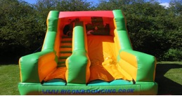
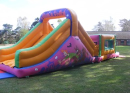

Activities and Stalls
Inflatable fun included in the price of the ticket. As many turns as you like on:-
- Shrek Garden Slide
 - Scooby Fun Run
 - The Space Bouncy Castle
- Noddy Toddler Castle
- Children's Sumo Suits
- Facepainting - Facepainters are a firm favourite with our festival goers – old and young. The very best will be coming to JuniperFest to decorate our faces AND the kids will be pleased to know they can go on the inflatables with face paint on this year!
- Little Bird Henna - Have some beautiful mendhi/henna done by the very talented Ruth of Little Bird Henna - http:// www.littlebirdhenna.co.uk
- Juniperfest Stall - The highly popular JuniperFest stall will be open for business again this year, selling inflatable goodies, bubbles, wings, hair garlands, band merchandise and much more!
- Stories and More are back for 3 enchanting story telling sessions in the Orchard!
- Get creative with kids’ crafts in the Orchard Craft Tent! One free item per child plus other great crafts available on a paid basis.